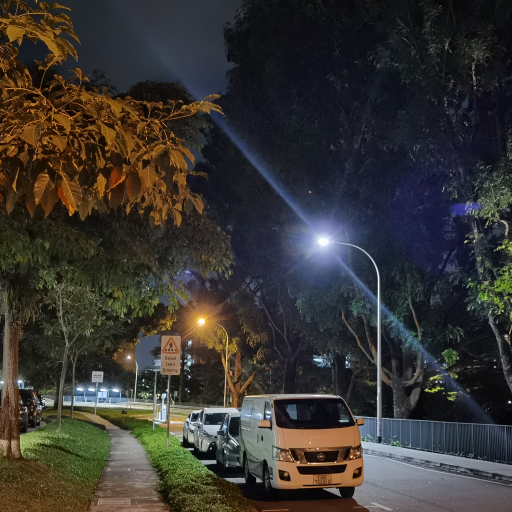
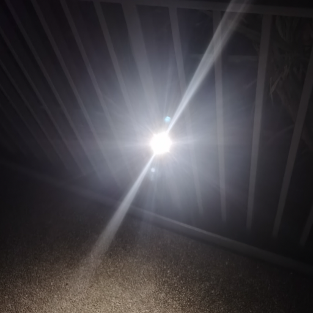
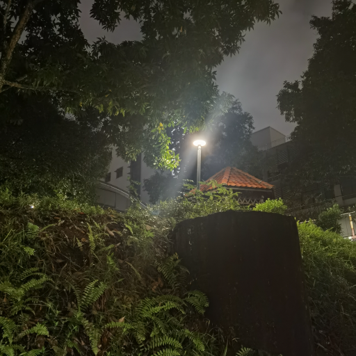
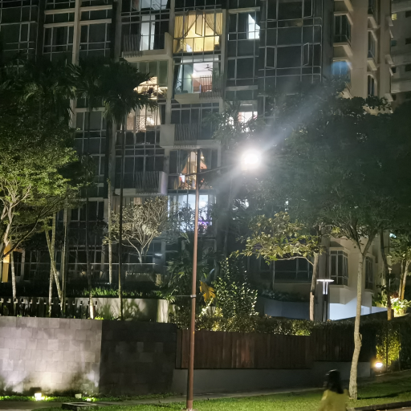
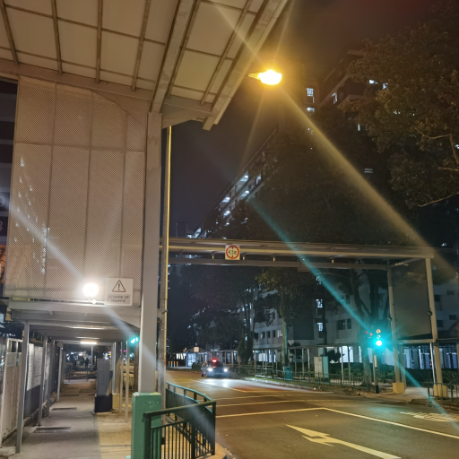
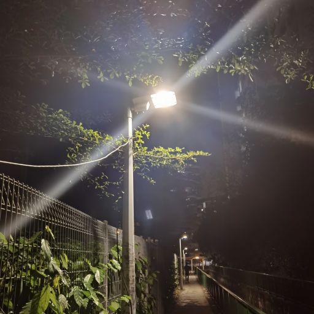
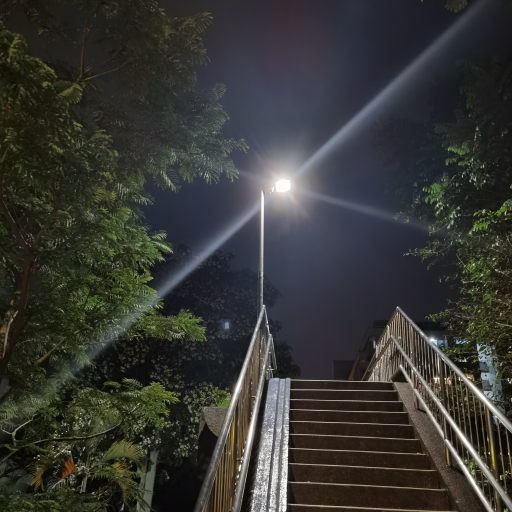

ReloBlur: Real-World Deep Local Motion Deblurring
- Haoying Li
- Ziran Zhang
- Tingting Jiang
- Peng Luo
- Huajun Feng
- Zhihai Xu
- College of Optical Science and Engineering, Zhejiang University


ReLoBlur Dataset
The ReloBlur dataset for local motion deblurring consists of 2304 blurred images with the size of 2152×1436 that are divided into 1909 training images and 395 test images. The dataset consists of pairs of a realistic locally blurred image and the corresponding ground truth sharp image that are obtained by a synchronized beam-splitting photographing system. For efficient training and testing, we also provide the resized version of ReLoBlur Dataset with the size of 538x359.

The 1 st and 5 th columns of the above figure are local motion-blurred images. The 2nd and 6th columns are the corresponding sharp images. The pink solid boxes and pink dotted boxes denote the locally blurred regions from locally blurred images, and the corresponding sharp regions from sharp images. The blue solid boxes and the blue dotted boxes denote the sharp regions from locally blurred images and the corresponding sharp regions from sharp images.
Video
Deblurring Results by LBAG Network
|  |  |  |  |
|  |  |  |
MouseOver: Nighttime deflared images
MouseOut: Nighttime flare-corrupted images
We referred to the project page of Nerfies, AvatarCLIP and Text2Human when creating this project page.
This dataset is licensed under CC BY-NC-SA 4.0.